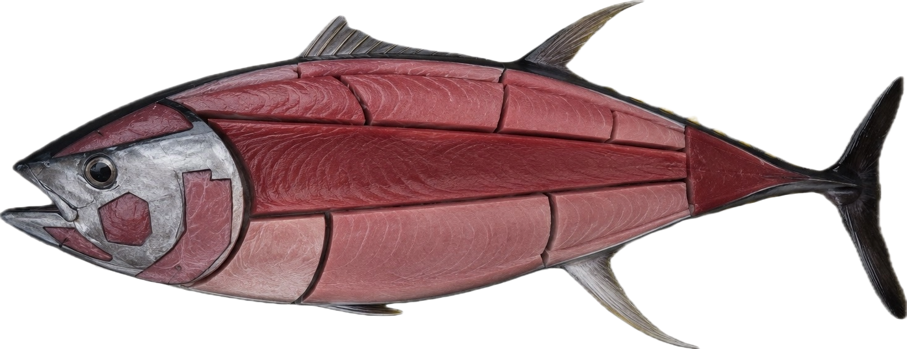

銀藍魚身被推上拍賣台，點亮今年第一個魚汛信號。
凌晨出海
凌晨三點。
東港還未甦醒。
漁船已駛向深海。
黑鮪魚洄游
每年春夏。
黑鮪魚穿越南方海域。
對東港而言，這是一年的開始。
凌晨三點。
東港還未甦醒。
漁船已駛向深海。
每年春夏。
黑鮪魚穿越南方海域。
對東港而言，這是一年的開始。
每年第一尾黑鮪魚回到東港，拍賣場的燈光、喊價與掌聲，讓漁港的一天正式展開。
2025 第一鮪紀錄
銀藍魚身被推上拍賣台，點亮今年第一個魚汛信號。
秤重、驗魚、喊價交錯，市場在清晨快速升溫。
第一鮪連結漁民、買家與餐桌，也成為東港的年度記憶。
傳統 × 現代文化交織
在東港，黑鮪魚不止是一道料理。
它與漁船、魚市場、東隆宮信仰、共同構成一座港口的靈魂。
傳統讓日常有根，現代讓文化被重新看見。黑鮪魚文化正是在這兩者之間，持續流動。
Interactive Bluefin Anatomy
點擊魚體部位，理解料理特色與市場價值。

Bluefin Life Timeline
從海洋到餐桌，牠的旅程也串起了東港的生活與文化。
黑鮪魚隨黑潮洄游，從深海開始牠的旅程。
漁民在凌晨出海，憑經驗與技術迎接魚汛。
漁船返航，魚市場與港口開始甦醒。
透過魚眼、魚身、尾切面判斷新鮮度與油脂。
喊價聲響起，第一鮪成為市場與地方的焦點。
魚體被分成不同部位，連結料理與市場價值。
從生魚片到熱炒，黑鮪魚進入人們的日常記憶。
黑鮪魚不只是漁獲，也是東港被看見的文化象徵。
Kuroshio Soundscape
用三段音樂，聽見東港從海上到餐桌的旅程
凌晨、黑潮、漁船出海前的深藍聲景。
漁船返航、海面光線、黑鮪魚回到港口。
魚市場、辦桌、生魚片、黑鮪魚季的地方生活。
一尾黑鮪魚的旅程，
從海洋開始。
經過黑潮、
漁船、
港口與餐桌。
而東港的故事，
至今仍持續著。
每一次漁船返港，
都是另一段旅程的開始。